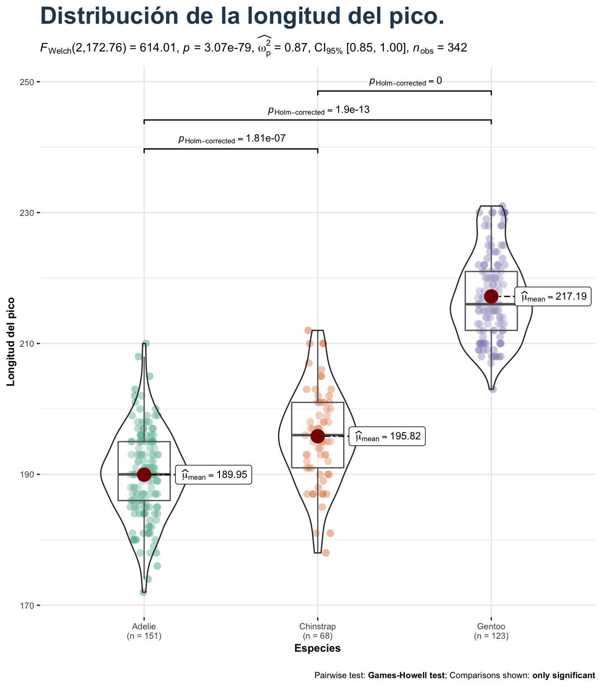

Capítulo 3 Reportes con R Markdown
Para generar un reporte se debe dar clik en File > New File > R Markdown. Se abrirá una plantilla que muestra la estructura básica de un documento .Rmd: Sección de metadatos escrita en YAML, bloques o chunks de código y texto escrito con etiquetas.
knitr::include_graphics("img/estructura.png")
3.1 Texto con etiquetas
3.1.1 Encabezados
Los encabezados hacen referencia a los títulos y subtítulos que se pueden colocar, existen seis niveles para denotar encabezados. La etiqueta para los encabezados es el símbolo de numeral (#) + espacio.
# Encabezado primer nivel
## Encabezado segundo nivel
### Encabezado tercer nivel
#### Encabezado cuarto nivel
##### Encabezado quinto nivel
###### Encabezado sexto nivel3.1.2 Énfasis en texto
Hace referencia a las negritas e italicas o cursivas. Las etiquetas para hacer énfasis son los asteriscos (*) y los guiones bajos (_).
Texto y etiquetas en el archivo .Rmd:
*Esto está en cursiva*
_Esto también_
**Esto está en negritas**
__Esto también__
***Esto está en negritas y cursivas***Texto en archivo compilado:
Esto está en cursiva
Esto también
Esto está en negritas
Esto también
Esto está en negritas y cursivas
3.1.3 Subíndices y superíndices
La etiqueta para los subíndices es la virgulilla (~), mientras que para los superíndices el símbolo de circunflejo (^).
Texto y etiquetas en el archivo .Rmd:
Subíndice: CO~2~
Superíndice: Mg^2+^Texto en archivo compilado:
Subíndice: CO2
Superíndice: Mg2+
3.1.4 Espacios entre párrafos
Para dejar espacios entre párrafos se debe dejar una línea en blanco en el archivo .Rmd.
Texto y etiquetas en el archivo .Rmd:
__Párrafo 1.__
"Mientras he estado en esta parte alta casi no he comido otra cosa que carne de tortuga. El pecho, asado al estilo de los gauchos, es decir, sin quitarle la piel, es excelente; con las tortugas jóvenes se hace muy buena sopa."
__Párrafo 2.__
“El hombre selecciona solo por su propio bien: la naturaleza solo por la del ser que ella tiende”.Texto en archivo compilado:
Párrafo 1. “Mientras he estado en esta parte alta casi no he comido otra cosa que carne de tortuga. El pecho, asado al estilo de los gauchos, es decir, sin quitarle la piel, es excelente; con las tortugas jóvenes se hace muy buena sopa.”
Párrafo 2. “El hombre selecciona solo por su propio bien: la naturaleza solo por la del ser que ella tiende”.
3.1.5 Listas
3.1.5.1 Listas ordenadas
Texto y etiquetas en el archivo .Rmd:
1. Rojo
2. Azul
3. VerdeTexto en archivo compilado:
- Rojo
- Azul
- Verde
3.1.5.2 Listas desordenadas
Las etiquetas para las listas desordenadas son los asterisocs (*) + espacio y los guiones (-) + espacio.
Texto y etiquetas en el archivo .Rmd:
- Rojo
- Azul
* VerdeTexto en archivo compilado:
- Rojo
- Azul
- Verde
3.1.5.3 Listas anidadas
Para las listas anidadas, es necesario dar un tab para el siguiente nivel de lista que se desea.
Texto y etiquetas en el archivo .Rmd:
- Rojo
1. Borgoña
2. Carmesí
- Verde
1. OlivoTexto en archivo compilado: - Rojo 1. Borgoña 2. Carmesí - Verde 1. Olivo
3.1.6 Hipervínculos
Sintaxis:
Opción 1:
[Texto](URL)Opción 2:
<URL>Ejemplo:
Texto y etiquetas en el archivo .Rmd:
Opción 1:
[Winter Genomics](https://www.wintergenomics.com/)Opción 2:
<https://www.wintergenomics.com/>Texto en archivo compilado:
Opción 1: Ésta es la página de Winter Genomics
Opción 2: https://www.wintergenomics.com/
3.1.7 Figuras
Sintaxis:
{especificaciones}Ejemplo:
{width=20% heigth=20%}Output

3.1.8 Ecuaciones matemáticas
Para ingresar ecuaciones matemáticas se utiliza el signo de pesos ($) como etiqueta y [los símbolos matemáticos de LaTex] (https://www.caam.rice.edu/~heinken/latex/symbols.pdf). Además se tienen las siguientes opciones:
- Opción 1:
$F = (C\frac{9}{5}+32)$ \(F = (C\frac{9}{5}+32)\)
- Opción 2:
$$F = (C\frac{9}{5}+32)$$ \[F = (C\frac{9}{5}+32)\]
- Opción 3:
$$
\int_0^\infty \frac{x^3}{e^x-1}\,dx = \frac{\pi^4}{15}
$$\[ \int_0^\infty \frac{x^3}{e^x-1}\,dx = \frac{\pi^4}{15} \]
3.1.9 Comentarios
<!-- Esto es un comentario en un archivo .Rmd -->3.2 Código en R Markdown
- Instalar paqueterías para gráficos y tablas:
paqueterias <- c("palmerpenguins", # Datos
"ggstatsplot", # Gráficos con detalles estadísticos
"kableExtra", # Tablas
"flextable", # Tablas
"tidyverse") # Para ciencia de datos
install.packages(paqueterias)3.2.1 Configuraciones de chunks
Los bloques de código también tienen sus opciones, ¿Deseamos que se muestre el resultado? ¿Sólo el resultado del código? ¿Ambos?
Algunos de éstas opciones son:
echo =: ¿Queremos que nuestro reporte incluya nuestro código?eval =: ¿Queremos que R evalúe el código?message =: ¿Queremos que nuestro reporte incluya los mensajes de la consola?
Importante: Éstas configuraciones son de tipo booleana (TRUE, FALSE)
Vamos a ver a continuación los casos
- Primer caso
Bloque de código en nuestro archivo .Rmd:
```{r, echo = TRUE, eval=TRUE, message = TRUE}
library(tidyverse)
```Lo que obtenemos en nuestro archivo compilado:
library(tidyverse)## ── Attaching packages ─────────────────────────────────────── tidyverse 1.3.1 ──## ✓ ggplot2 3.3.5 ✓ purrr 0.3.4
## ✓ tibble 3.1.5 ✓ dplyr 1.0.7
## ✓ tidyr 1.1.4 ✓ stringr 1.4.0
## ✓ readr 2.0.2 ✓ forcats 0.5.1## ── Conflicts ────────────────────────────────────────── tidyverse_conflicts() ──
## x dplyr::filter() masks stats::filter()
## x dplyr::lag() masks stats::lag()- Segundo caso
Bloque de código en nuestro archivo .Rmd:
```{r, echo = TRUE, eval=TRUE, message = FALSE}
library(tidyverse)
```Lo que obtenemos en nuestro archivo compilado:
library(tidyverse)- Tercer caso:
Bloque de código en nuestro archivo
.Rmd:
```{r, echo = FALSE, eval=TRUE, message = FALSE}
library(tidyverse)
```Lo que obtenemos en nuestro archivo compilado:
Nada… Aquí solo se cargó la librería y listo.
3.2.2 Insertar figuras con código:
Ahora veremos algunas de las opciones para insertar figuras y modificar el tamaño, la alineación y la inserción de títulos en las figuras.
Comandos para la modificación de tamaño:
out.width = "45%"out.height = "45%"fig.out = 4figt.width = 4
Comando para alinear:
fig.align = "center"
Comando para insertar títulos en las figuras:
fig.cap = "Título de la figura"
Ejemplo:
Bloque de código en nuestro archivo .Rmd:
```{r, echo = TRUE, eval=TRUE, out.width = '50%', fig.align = 'center', fig.cap = "Pingüinos"}
url1 <- 'https://www.goodnewsnetwork.org/wp-content/uploads/2014/11/penguin-science-rover-Le_Maho-research-in-NatureMethods.jpg'
knitr::include_graphics(url1)
```Lo que obtenemos en nuestro archivo compilado:
url1 <- 'https://www.goodnewsnetwork.org/wp-content/uploads/2014/11/penguin-science-rover-Le_Maho-research-in-NatureMethods.jpg'
knitr::include_graphics(url1) 
Figure 3.1: Pingüinos
3.2.3 Insertar gráficos
Para éste apartado utilizaremos las librerias de palmerpenguins, ggstatsplot y
- Primero, vamos a cargar las paqueterías en cuestión:
library(palmerpenguins)
library(ggstatsplot)- Para conocer los datos puedes escribir en un script de apoyo el siguiente comando:
data(package = 'palmerpenguins')Imprimirá por consola lo siguiente:
Data sets in package ‘palmerpenguins’:
penguins Size measurements for adult foraging penguins near
Palmer Station, Antarctica
penguins_raw (penguins) Penguin size, clutch, and blood isotope data for
foraging adults near Palmer Station, AntarcticaEsto quiere decir que nuestra libreria contiene dos datasets penguins y penguins_raw.
- Procesamos a generar un gráfico, para esto utilizaremos las configuraciones de
fig.width =yfig.height=.
Bloque de código en nuestro archivo .Rmd:
```{r, echo = TRUE, warning = FALSE, fig.width = 7, fig.height = 8, fig.align = 'center'}
plt <- ggbetweenstats(
data = penguins,
x = species,
y = flipper_length_mm
) +
labs(
x = "Especies",
y = "Longitud del pico",
title = "Distribución de la longitud del pico."
) +
theme(
text = element_text(size = 9,
color = "black"),
plot.title = element_text(
size = 20,
face = "bold",
color = "#2a475e"
)
)
plt
```Lo que obtenemos en nuestro archivo compilado:
plt <- ggbetweenstats(
data = penguins,
x = species,
y = flipper_length_mm
) +
labs(
x = "Especies",
y = "Longitud del pico",
title = "Distribución de la longitud del pico."
) +
theme(
text = element_text(size = 9,
color = "black"),
plot.title = element_text(
size = 20,
face = "bold",
color = "#2a475e"
)
)
plt
Para conocer más opciones sobre la configuración de los bloques de código, puedes consultar el libro knitr: elegant, flexible, and fast dynamic report generation with R.
3.2.4 Tablas con paqueterías especializadas
Utilizaremos las librerias de kableExtra y flextable.
- Primero, llamamos a las librerías:
library(kableExtra)##
## Attaching package: 'kableExtra'## The following object is masked from 'package:dplyr':
##
## group_rowslibrary(flextable)##
## Attaching package: 'flextable'## The following objects are masked from 'package:kableExtra':
##
## as_image, footnote## The following object is masked from 'package:purrr':
##
## composelibrary(tidyverse)- Luego, vamos a generar una tabla sencilla con
kable, ésta paquetería viene incluida enknitr. Además utilizaremos la tabla depenguinsincluida en la librería depalmerpenguins.
# Filtrado rápido
penguins_table <- head(penguins, 10)[,1:4]
tabla1 <- knitr::kable(penguins_table,
caption= "Tabla con kable")
tabla1| species | island | bill_length_mm | bill_depth_mm |
|---|---|---|---|
| Adelie | Torgersen | 39.1 | 18.7 |
| Adelie | Torgersen | 39.5 | 17.4 |
| Adelie | Torgersen | 40.3 | 18.0 |
| Adelie | Torgersen | NA | NA |
| Adelie | Torgersen | 36.7 | 19.3 |
| Adelie | Torgersen | 39.3 | 20.6 |
| Adelie | Torgersen | 38.9 | 17.8 |
| Adelie | Torgersen | 39.2 | 19.6 |
| Adelie | Torgersen | 34.1 | 18.1 |
| Adelie | Torgersen | 42.0 | 20.2 |
3.2.4.1 Tabla con kableExtra
Ahora, reharemos nuestra tabla anterior pero adicionaremos algunas especificaciones en las filas (row_spec) y en las columnas (column_spec) con kableExtra.
tabla2 <- knitr::kable(penguins_table,
caption= "Tabla con kableExtra") %>%
row_spec(1, bold = TRUE, italic = TRUE) %>%
row_spec(2:3, color = 'white', background = 'black') %>%
row_spec(4, underline = TRUE, monospace = TRUE) %>%
column_spec(4, strikeout = TRUE)
tabla2| species | island | bill_length_mm | bill_depth_mm |
|---|---|---|---|
| Adelie | Torgersen | 39.1 | 18.7 |
| Adelie | Torgersen | 39.5 | 17.4 |
| Adelie | Torgersen | 40.3 | 18.0 |
| Adelie | Torgersen | NA | NA |
| Adelie | Torgersen | 36.7 | 19.3 |
| Adelie | Torgersen | 39.3 | 20.6 |
| Adelie | Torgersen | 38.9 | 17.8 |
| Adelie | Torgersen | 39.2 | 19.6 |
| Adelie | Torgersen | 34.1 | 18.1 |
| Adelie | Torgersen | 42.0 | 20.2 |
Aquí podemos observar un símbolo nuevo (%>%), éste símbolo es conocido como pipe y pertenece a la librería de magrittr, la cual a su vez viene incluida en tidyverse. Un pipe permite conectar procesos, tomando el resultado de salida del proceso anterior como entrada del siguiente proceso. Ésta acción permite que el código sea mucho más limpio y fácil de leer y que el programa sea más eficiente.
3.2.4.2 Tabla con Flextable
Para la generación de la tabla con ésta paquetería utilizaremos el dataset de penguins_raw de nuestra libreria de palmerpenguins.
# Filtrado rápido
penguins_data3 <- head(penguins_raw, n = 5)[, c(3,10:14)]
penguins_data3 %>%
flextable()%>%
fix_border_issues(part="all")%>%
bold(part="header") %>%
align(align = "center", part= "all") %>%
color(., ~ `Culmen Length (mm)` < 40, ~ `Culmen Length (mm)` , color = "orange") %>%
color(., ~ `Culmen Depth (mm)` > 18, ~ `Culmen Depth (mm)`, color = "green") %>%
bg(.,bg = "#AEDEF3", part = "header")Species | Culmen Length (mm) | Culmen Depth (mm) | Flipper Length (mm) | Body Mass (g) | Sex |
Adelie Penguin (Pygoscelis adeliae) | 39.1 | 18.7 | 181 | 3,750 | MALE |
Adelie Penguin (Pygoscelis adeliae) | 39.5 | 17.4 | 186 | 3,800 | FEMALE |
Adelie Penguin (Pygoscelis adeliae) | 40.3 | 18.0 | 195 | 3,250 | FEMALE |
Adelie Penguin (Pygoscelis adeliae) | |||||
Adelie Penguin (Pygoscelis adeliae) | 36.7 | 19.3 | 193 | 3,450 | FEMALE |
Como se puede observar, con flextable también es posible llevar a cabo diversas modificaciones que permiten una mejor visualización de las tablas que reportemos.
3.3 Sección de metadatos: YAML
YAML Ain`t Markup Language (YAML no es un lenguaje de marcado). Es un lenguaje que permite especificar algunos detalles del documento de salida como: el autor, el título, la fecha, si deseamos que las secciones estén numeradas, la tabla de contendio, entre muchas otras cosas.
Por ejemplo:
---
title: "Mi primer reporte"
author: "Winter Genomics"
date: "26/11/2021"
output: html_document
---Para agregar tablas de contenido podemos utilizar toc que significa *Table of Contents`.
---
title: "Mi primer reporte"
author: "Winter Genomics"
date: "26/11/2021"
output:
html_document:
toc: true # Agrega la tabla de contenido
toc_float: true # Agrega un índice "flotante"
---También se puede agregar el número de secciones con el comando number_sections:
---
title: "Mi primer reporte"
author: "Winter Genomics"
date: "26/11/2021"
output:
html_document:
toc: true
toc_float: true
toc_depth: 1
number_sections: true
theme: "yeti"
highlight: "tango"
---Y, por útimo, R Markdown nos da la opción de cambiar el tema y el resaltado con los comandos theme: y highlight:.
---
title: "Mi primer reporte"
author: "Winter Genomics"
date: "26/11/2021"
output:
html_document:
toc: true
toc_float: true
number_sections: true
theme: "yeti"
highlight: "tango"
---Si deseas conocer todas las opciones de temas que R Markdown tiene disponible puedes escribir en consola o en un script de apoyo lo siguiente:
rmarkdown:::themes()## [1] "default" "bootstrap" "cerulean" "cosmo" "darkly" "flatly"
## [7] "journal" "lumen" "paper" "readable" "sandstone" "simplex"
## [13] "spacelab" "united" "yeti"También podemos conocer las opciones de resaltado con:
rmarkdown:::highlighters()## [1] "default" "tango" "pygments" "kate" "monochrome"
## [6] "espresso" "zenburn" "haddock" "breezedark"Por otro lado, ésta página contiene todos los argumentos que se pueden especificar en la sección de metadatos con YAML.